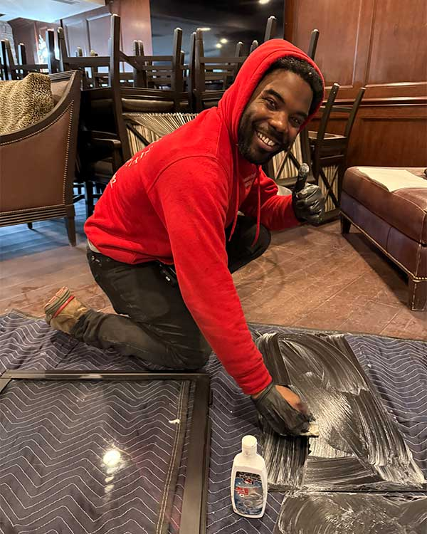

Has it been a minute since your last chimney sweeping and fireplace inspection? Looking for a certified chimney service company that prioritizes excellence just as much as efficiency? Get in touch with the team at Garden State Chimney — we can schedule your inspection and cleaning quickly.
As a licensed and insured company, we pride ourselves on honest, professional, reputable service throughout Morris County, Passaic County, and beyond, including Wayne, Morristown, Ridgewood, and Franklin Lakes.
Request an Appointment
A chimney inspection is a thorough analysis of your system — from firebox to flue, cap to crown. Think of it as a diagnostic exam on the overall health of the entire structure. A professionally trained sweep checks every part of your system for cracks, gaps, separations among flue tiles, leaks, outside debris, or substance buildup. If anything threatens the health and performance of your chimney, a tech will spot it and address it.
The most common inspection: a basic full-system check of all accessible parts to ensure your system hasn’t suffered damage or deterioration. Your sweep will investigate all exposed surface area inside and out, watch for obvious signs of decay or obstructions, and confirm the structure is sound and ready for the season.
Performed when there have been changes to the system — a new flue liner, a remodel, a fuel-type switch, or after damage. It’s also required when a property transfers ownership. Your sweep inspects visible and accessible areas plus the inside of the chimney, uses a camera to see throughout the flue, and removes doors and panels to reach harder areas.
Most of a chimney’s functioning happens out of sight, within its walls — meaning if something is off, you’d likely never know. Over time, small hairline fractures in a clay liner can become big breaks, until harmful gases and combustion byproducts blow back into your living space instead of venting safely out of your home. Annual chimney inspections are a crucial part of regular home maintenance — even if you never use your fireplace.
According to the Chimney Safety Institute of America (CSIA) and in line with the National Fire Protection Association (NFPA), homeowners are required to have their chimney inspected at least once a year. Regular inspections also save you money in the long run by catching problems early. If your system starts acting up, call us out for a look — even if you were just inspected last week.
Essentially, there’s none. Because chimneys come into direct contact with combustion byproducts and harmful gases, professionals prefer the term “sweeping.” Using specialized tools designed to remove caked-on creosote and other debris, your chimney sweep clears the flue so you can continue to enjoy your system safely all season long.
Because every home and chimney system is different, we don’t advertise prices or ranges — we’d rather give you an accurate, personalized estimate. After a little time chatting with you and learning about your chimney and history of use, we’re happy to walk you through an estimated quote. Just call 973-519-0802 or request an appointment online.
Call us at 973-519-0802 or book your appointment online. We can’t wait to work with you.